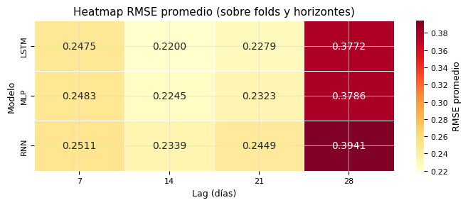
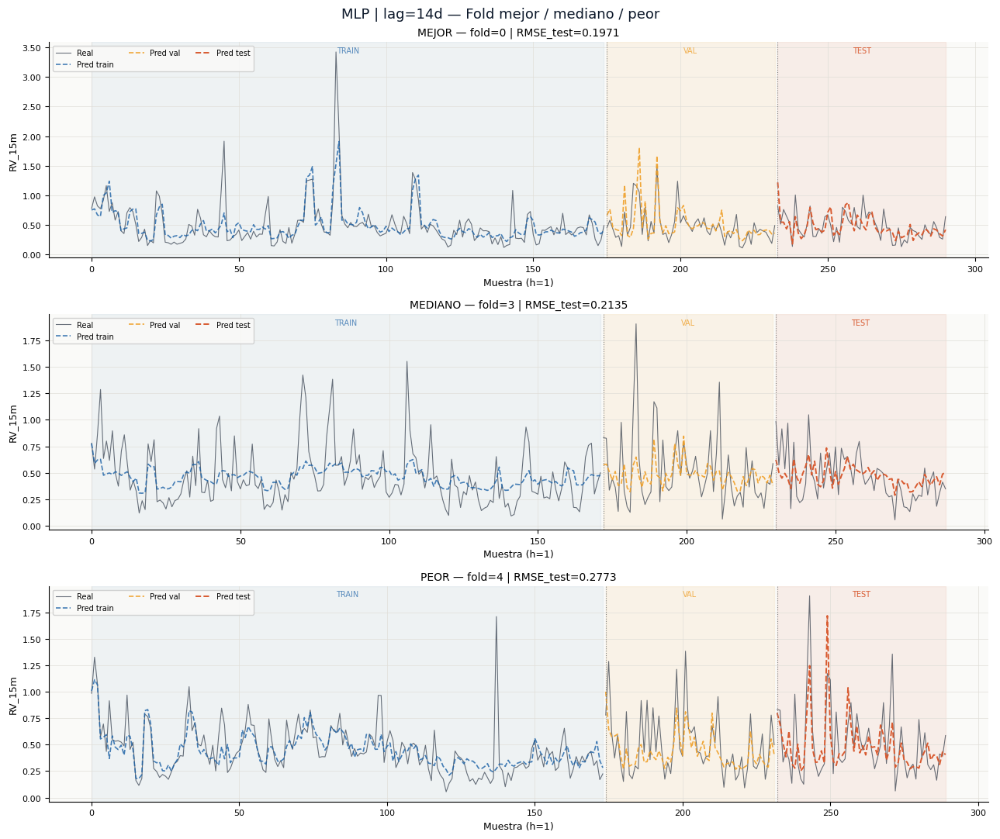
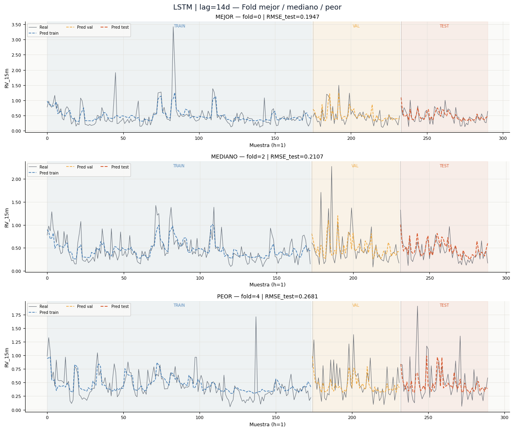
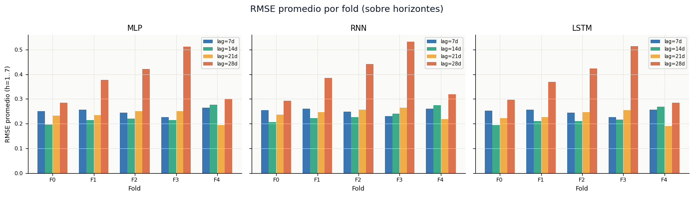
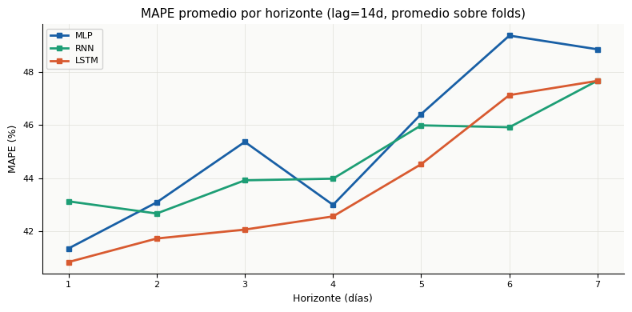
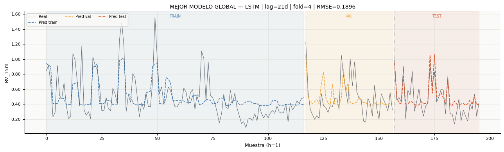
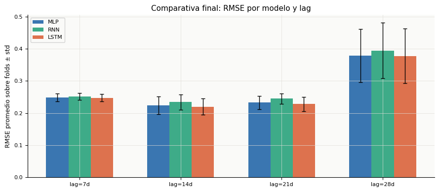

📊 Model Evaluation — MLP · RNN · LSTM#
Deep Learning Project | Bitcoin Volatility Forecasting#
Input: results.pkl — contiene results_all, best_configs, best_global, splits y metadata
Secciones:
Carga de resultados y setup
Métricas por horizonte y por lag
Test BDS en residuos (h=1)
Curvas train/val/test por fold
RMSE por fold y horizonte
Mejor modelo global y conclusiones
1. Carga de resultados y setup#
import pickle, warnings
import numpy as np
import pandas as pd
import matplotlib.pyplot as plt
import matplotlib.patches as mpatches
import matplotlib.ticker as mticker
import seaborn as sns
warnings.filterwarnings('ignore')
# ── Estilo global ────────────────────────────────────────────────────────────
C = {
'navy': '#0A1628', 'blue': '#185FA5', 'teal': '#1D9E75',
'amber': '#EF9F27', 'coral': '#D85A30', 'purple': '#7F77DD',
'gray': '#888780', 'green': '#2E8B57', 'red': '#C0392B',
}
LAG_COLORS = {7: C['blue'], 14: C['teal'], 21: C['amber'], 28: C['coral']}
FOLD_COLORS = ['#185FA5','#1D9E75','#EF9F27','#D85A30','#7F77DD']
MODEL_COLORS = {'MLP': C['blue'], 'RNN': C['teal'], 'LSTM': C['coral']}
plt.rcParams.update({
'figure.facecolor': 'white',
'axes.facecolor': '#FAFAF8',
'axes.spines.top': False,
'axes.spines.right': False,
'axes.grid': True,
'grid.color': '#E0DED8',
'grid.linewidth': 0.5,
'font.family': 'DejaVu Sans',
'axes.titlesize': 11,
'axes.labelsize': 9,
'xtick.labelsize': 8,
'ytick.labelsize': 8,
'legend.fontsize': 8,
'legend.framealpha': 0.85,
})
print('✅ Librerías cargadas')
✅ Librerías cargadas
import os
# Intenta results.pkl primero (completo), luego results_all_checkpoint.pkl
if os.path.exists('results.pkl'):
with open('results.pkl', 'rb') as f:
data = pickle.load(f)
results_all = data['results_all']
best_configs = data['best_configs']
best_global = data['best_global']
LAGS_LIST = data['lags_list']
N_STEPS_FORECAST = data['n_steps_forecast']
TARGET_COL = data['target_col']
time_series = data['time_series']
dates = data['dates']
print('✅ results.pkl cargado')
elif os.path.exists('results_all_checkpoint.pkl'):
with open('results_all_checkpoint.pkl', 'rb') as f:
results_all = pickle.load(f)
# fallbacks manuales si solo hay el checkpoint parcial
LAGS_LIST = [7, 14, 21, 28]
N_STEPS_FORECAST = 7
TARGET_COL = 'RV_15m'
best_configs = None # no disponible en checkpoint parcial
best_global = None
time_series = None
dates = None
print('⚠️ Solo results_all_checkpoint.pkl — best_configs/best_global no disponibles')
else:
raise FileNotFoundError('No se encontró results.pkl ni results_all_checkpoint.pkl')
MTYPES = list(results_all.keys())
FOLDS = list(results_all[MTYPES[0]][LAGS_LIST[0]].keys())
print(f' Modelos : {MTYPES}')
print(f' Lags : {LAGS_LIST}')
print(f' Folds : {FOLDS}')
print(f' Horizonte: {N_STEPS_FORECAST} días')
✅ results.pkl cargado
Modelos : ['MLP', 'RNN', 'LSTM']
Lags : [7, 14, 21, 28]
Folds : [0, 1, 2, 3, 4]
Horizonte: 7 días
2. Métricas por horizonte y por lag#
# ── Construir DataFrame largo ────────────────────────────────────────────────
# Una fila por (mtype, lag, fold, horizon)
rows = []
for mtype in MTYPES:
for lag in LAGS_LIST:
for fold in FOLDS:
r = results_all[mtype][lag][fold]
m = r['metrics_test']
for h in range(1, N_STEPS_FORECAST + 1):
rows.append({
'Model': mtype,
'Lag': lag,
'Fold': fold,
'Horizon': h,
'RMSE': m[f'h{h}']['RMSE'],
'MAE': m[f'h{h}']['MAE'],
'MAPE': m[f'h{h}']['MAPE'],
'MSE': m[f'h{h}']['MSE'],
'RMSE_mean': r['rmse_test'],
})
df_long = pd.DataFrame(rows)
print(f'DataFrame largo: {df_long.shape[0]} filas × {df_long.shape[1]} columnas')
df_long.head(3)
DataFrame largo: 420 filas × 9 columnas
| Model | Lag | Fold | Horizon | RMSE | MAE | MAPE | MSE | RMSE_mean | |
|---|---|---|---|---|---|---|---|---|---|
| 0 | MLP | 7 | 0 | 1 | 0.198183 | 0.145755 | 30.9773 | 0.039277 | 0.250831 |
| 1 | MLP | 7 | 0 | 2 | 0.230576 | 0.149849 | 36.0282 | 0.053165 | 0.250831 |
| 2 | MLP | 7 | 0 | 3 | 0.276814 | 0.168777 | 43.9740 | 0.076626 | 0.250831 |
# ── Tabla comparativa de lags por modelo ────────────────────────────────────
# Agrega sobre folds y horizontes: muestra RMSE y MAPE promedio
summary = (
df_long
.groupby(['Model', 'Lag'])[['RMSE', 'MAPE', 'MAE', 'MSE']]
.agg(['mean', 'std'])
.round(4)
)
summary.columns = ['_'.join(c) for c in summary.columns]
# Tabla legible: RMSE mean±std y MAPE mean±std
display_rows = []
for (mtype, lag), row in summary.iterrows():
display_rows.append({
'Model': mtype,
'Lag (d)': lag,
'RMSE mean±std': f"{row['RMSE_mean']:.4f} ± {row['RMSE_std']:.4f}",
'MAPE mean±std': f"{row['MAPE_mean']:.2f}% ± {row['MAPE_std']:.2f}%",
'MAE mean±std': f"{row['MAE_mean']:.4f} ± {row['MAE_std']:.4f}",
})
df_summary = pd.DataFrame(display_rows)
print('\n── Tabla comparativa de lags ────────────────────────────────────────')
display(df_summary.set_index(['Model', 'Lag (d)']))
df_summary.to_csv('results/summary_lag_comparison.csv', index=False)
print('✅ Guardado: results/summary_lag_comparison.csv')
── Tabla comparativa de lags ────────────────────────────────────────
| RMSE mean±std | MAPE mean±std | MAE mean±std | ||
|---|---|---|---|---|
| Model | Lag (d) | |||
| LSTM | 7 | 0.2475 ± 0.0433 | 43.00% ± 6.83% | 0.1669 ± 0.0204 |
| 14 | 0.2200 ± 0.0464 | 43.78% ± 5.37% | 0.1615 ± 0.0220 | |
| 21 | 0.2279 ± 0.0517 | 42.31% ± 7.20% | 0.1588 ± 0.0265 | |
| 28 | 0.3772 ± 0.1650 | 49.53% ± 12.88% | 0.2346 ± 0.0637 | |
| MLP | 7 | 0.2483 ± 0.0444 | 41.80% ± 6.97% | 0.1644 ± 0.0206 |
| 14 | 0.2245 ± 0.0464 | 45.34% ± 6.91% | 0.1626 ± 0.0233 | |
| 21 | 0.2323 ± 0.0522 | 41.39% ± 8.56% | 0.1614 ± 0.0279 | |
| 28 | 0.3786 ± 0.1586 | 51.92% ± 15.61% | 0.2396 ± 0.0657 | |
| RNN | 7 | 0.2511 ± 0.0442 | 42.14% ± 6.90% | 0.1686 ± 0.0203 |
| 14 | 0.2339 ± 0.0440 | 44.75% ± 6.21% | 0.1725 ± 0.0240 | |
| 21 | 0.2449 ± 0.0499 | 45.23% ± 8.02% | 0.1759 ± 0.0280 | |
| 28 | 0.3941 ± 0.1596 | 51.65% ± 10.56% | 0.2540 ± 0.0591 |
✅ Guardado: results/summary_lag_comparison.csv
# ── Gráfica: RMSE por horizonte, curva por lag, faceta por modelo ────────────
df_h = df_long.groupby(['Model', 'Lag', 'Horizon'])['RMSE'].mean().reset_index()
fig, axes = plt.subplots(1, len(MTYPES), figsize=(14, 4), sharey=True)
fig.suptitle('RMSE promedio por horizonte — comparativa de lags', fontsize=13, fontweight='500', color=C['navy'])
for ax, mtype in zip(axes, MTYPES):
for lag in LAGS_LIST:
sub = df_h[(df_h['Model'] == mtype) & (df_h['Lag'] == lag)]
ax.plot(sub['Horizon'], sub['RMSE'], marker='o', markersize=4,
color=LAG_COLORS[lag], linewidth=1.8, label=f'lag={lag}d')
ax.set_title(mtype, fontweight='500')
ax.set_xlabel('Horizonte (días)')
ax.set_xticks(range(1, N_STEPS_FORECAST + 1))
if ax == axes[0]:
ax.set_ylabel('RMSE promedio')
ax.legend()
plt.tight_layout()
plt.savefig('results/fig_rmse_por_horizonte.png', dpi=150, bbox_inches='tight')
plt.show()
print('✅ Guardado: results/fig_rmse_por_horizonte.png')

✅ Guardado: results/fig_rmse_por_horizonte.png
# ── Heatmap: RMSE promedio por (modelo × lag) ────────────────────────────────
pivot = (
df_long.groupby(['Model', 'Lag'])['RMSE']
.mean()
.unstack('Lag')
.round(4)
)
fig, ax = plt.subplots(figsize=(7, 3))
sns.heatmap(
pivot, annot=True, fmt='.4f', cmap='YlOrRd',
linewidths=0.5, ax=ax, cbar_kws={'label': 'RMSE promedio'}
)
ax.set_title('Heatmap RMSE promedio (sobre folds y horizontes)', fontweight='500')
ax.set_xlabel('Lag (días)')
ax.set_ylabel('Modelo')
plt.tight_layout()
plt.savefig('results/fig_heatmap_rmse.png', dpi=150, bbox_inches='tight')
plt.show()
print('✅ Guardado: results/fig_heatmap_rmse.png')

✅ Guardado: results/fig_heatmap_rmse.png
# ── Tabla detallada por fold para cada (modelo, lag) ─────────────────────────
os.makedirs('results', exist_ok=True)
for mtype in MTYPES:
rows_t = []
for lag in LAGS_LIST:
for fold in FOLDS:
r = results_all[mtype][lag][fold]
m = r['metrics_test']
row = {'Lag': lag, 'Fold': fold}
for h in range(1, N_STEPS_FORECAST + 1):
row[f'MAPE_h{h}'] = m[f'h{h}']['MAPE']
row[f'RMSE_h{h}'] = m[f'h{h}']['RMSE']
row['MAPE_mean'] = m['mean']['MAPE']
row['MAE_mean'] = m['mean']['MAE']
row['RMSE_mean'] = m['mean']['RMSE']
row['MSE_mean'] = m['mean']['MSE']
row['BDS_pval'] = r['bds_pval']
rows_t.append(row)
df_t = pd.DataFrame(rows_t)
df_t.to_csv(f'results/metrics_{mtype}_full.csv', index=False)
print('✅ Tablas detalladas guardadas en results/metrics_{modelo}_full.csv')
✅ Tablas detalladas guardadas en results/metrics_{modelo}_full.csv
3. Test BDS en residuos (h=1)#
# ── Tabla BDS: p-value por (modelo, lag, fold) ───────────────────────────────
ALPHA = 0.05
bds_rows = []
for mtype in MTYPES:
for lag in LAGS_LIST:
for fold in FOLDS:
r = results_all[mtype][lag][fold]
pval = r['bds_pval']
bds_rows.append({
'Model': mtype,
'Lag': lag,
'Fold': fold,
'BDS_pval': round(pval, 4),
'Result': 'OK ✅' if pval > ALPHA else 'WARN ⚠️',
})
df_bds = pd.DataFrame(bds_rows)
# Resumen: % folds que pasan por (modelo, lag)
bds_summary = (
df_bds.groupby(['Model', 'Lag'])
.apply(lambda g: pd.Series({
'p_mean': round(g['BDS_pval'].mean(), 4),
'p_min': round(g['BDS_pval'].min(), 4),
'p_max': round(g['BDS_pval'].max(), 4),
'OK_folds': f"{(g['BDS_pval'] > ALPHA).sum()}/{len(g)}",
}))
.reset_index()
)
print('── Resumen BDS test (max_dim=2, h=1) ────────────────────────────────')
display(bds_summary.set_index(['Model', 'Lag']))
df_bds.to_csv('results/bds_pvalues.csv', index=False)
print('\n✅ Guardado: results/bds_pvalues.csv')
── Resumen BDS test (max_dim=2, h=1) ────────────────────────────────
| p_mean | p_min | p_max | OK_folds | ||
|---|---|---|---|---|---|
| Model | Lag | ||||
| LSTM | 7 | 0.9423 | 0.9075 | 0.9943 | 5/5 |
| 14 | 0.9517 | 0.9164 | 0.9945 | 5/5 | |
| 21 | 0.9423 | 0.9122 | 0.9831 | 5/5 | |
| 28 | 0.9484 | 0.9013 | 0.9795 | 5/5 | |
| MLP | 7 | 0.9591 | 0.9118 | 0.9975 | 5/5 |
| 14 | 0.9644 | 0.9086 | 0.9919 | 5/5 | |
| 21 | 0.9476 | 0.8630 | 0.9957 | 5/5 | |
| 28 | 0.9712 | 0.9378 | 0.9968 | 5/5 | |
| RNN | 7 | 0.9451 | 0.9024 | 0.9945 | 5/5 |
| 14 | 0.9775 | 0.9508 | 0.9953 | 5/5 | |
| 21 | 0.9680 | 0.9555 | 0.9818 | 5/5 | |
| 28 | 0.9585 | 0.9148 | 0.9910 | 5/5 |
✅ Guardado: results/bds_pvalues.csv
# ── Gráfica: distribución de p-values BDS ────────────────────────────────────
fig, axes = plt.subplots(1, 2, figsize=(13, 4))
fig.suptitle('Distribución de p-values BDS (h=1, max_dim=2)', fontsize=13, fontweight='500', color=C['navy'])
# Panel izquierdo: stripplot por modelo
ax = axes[0]
for i, mtype in enumerate(MTYPES):
sub = df_bds[df_bds['Model'] == mtype]['BDS_pval'].values
jitter = np.random.uniform(-0.15, 0.15, len(sub))
ax.scatter(np.full_like(sub, i) + jitter, sub,
color=MODEL_COLORS[mtype], alpha=0.75, s=40, zorder=3)
ax.boxplot(sub, positions=[i], widths=0.25,
medianprops=dict(color='black', linewidth=1.5),
boxprops=dict(color=MODEL_COLORS[mtype]),
whiskerprops=dict(color=MODEL_COLORS[mtype]),
capprops=dict(color=MODEL_COLORS[mtype]),
flierprops=dict(marker=''))
ax.axhline(ALPHA, color=C['red'], linewidth=1.2, linestyle='--', label=f'α={ALPHA}')
ax.set_xticks(range(len(MTYPES)))
ax.set_xticklabels(MTYPES)
ax.set_ylabel('p-value BDS')
ax.set_title('Por modelo')
ax.legend()
# Panel derecho: stripplot por lag
ax = axes[1]
for i, lag in enumerate(LAGS_LIST):
sub = df_bds[df_bds['Lag'] == lag]['BDS_pval'].values
jitter = np.random.uniform(-0.15, 0.15, len(sub))
ax.scatter(np.full_like(sub, i) + jitter, sub,
color=LAG_COLORS[lag], alpha=0.75, s=40, zorder=3)
ax.boxplot(sub, positions=[i], widths=0.25,
medianprops=dict(color='black', linewidth=1.5),
boxprops=dict(color=LAG_COLORS[lag]),
whiskerprops=dict(color=LAG_COLORS[lag]),
capprops=dict(color=LAG_COLORS[lag]),
flierprops=dict(marker=''))
ax.axhline(ALPHA, color=C['red'], linewidth=1.2, linestyle='--', label=f'α={ALPHA}')
ax.set_xticks(range(len(LAGS_LIST)))
ax.set_xticklabels([f'lag={l}d' for l in LAGS_LIST])
ax.set_ylabel('p-value BDS')
ax.set_title('Por lag')
ax.legend()
plt.tight_layout()
plt.savefig('results/fig_bds_pvalues.png', dpi=150, bbox_inches='tight')
plt.show()
print('✅ Guardado: results/fig_bds_pvalues.png')

✅ Guardado: results/fig_bds_pvalues.png
4. Curvas train / val / test con predicciones#
# ── Función auxiliar: gráfica de curvas para un (mtype, lag, fold) ───────────
def plot_forecast_curves(mtype, lag, fold, ax=None, title=None):
"""Plotea y_true vs yhat en train, val y test para un fold dado.
Usa el horizonte h=1 (primera columna) para mantener la serie 1-D.
"""
r = results_all[mtype][lag][fold]
y_tr = r['y_train_raw'][:, 0]
y_val = r['y_val_raw'][:, 0]
y_te = r['y_test_raw'][:, 0]
p_tr = r['yhat_train'][:, 0]
p_val = r['yhat_val'][:, 0]
p_te = r['yhat_test'][:, 0]
n_tr = len(y_tr)
n_val = len(y_val)
n_te = len(y_te)
# Ejes x contiguos
x_tr = np.arange(n_tr)
x_val = np.arange(n_tr, n_tr + n_val)
x_te = np.arange(n_tr + n_val, n_tr + n_val + n_te)
if ax is None:
fig, ax = plt.subplots(figsize=(12, 3.5))
# Bandas de fondo
ax.axvspan(x_tr[0], x_tr[-1], alpha=0.05, color=C['blue'], label='_nolegend_')
ax.axvspan(x_val[0], x_val[-1], alpha=0.08, color=C['amber'], label='_nolegend_')
ax.axvspan(x_te[0], x_te[-1], alpha=0.08, color=C['coral'], label='_nolegend_')
# Series reales
ax.plot(x_tr, y_tr, color=C['navy'], linewidth=0.8, alpha=0.6)
ax.plot(x_val, y_val, color=C['navy'], linewidth=0.8, alpha=0.6)
ax.plot(x_te, y_te, color=C['navy'], linewidth=0.8, alpha=0.6, label='Real')
# Predicciones
ax.plot(x_tr, p_tr, color=C['blue'], linewidth=1.2, linestyle='--', alpha=0.8, label='Pred train')
ax.plot(x_val, p_val, color=C['amber'], linewidth=1.2, linestyle='--', alpha=0.9, label='Pred val')
ax.plot(x_te, p_te, color=C['coral'], linewidth=1.4, linestyle='--', label='Pred test')
# Separadores verticales
ax.axvline(x_val[0], color='gray', linewidth=0.8, linestyle=':')
ax.axvline(x_te[0], color='gray', linewidth=0.8, linestyle=':')
# Anotaciones
ax.text(x_tr.mean(), ax.get_ylim()[1]*0.95, 'TRAIN', ha='center', fontsize=7, color=C['blue'], alpha=0.7)
ax.text(x_val.mean(), ax.get_ylim()[1]*0.95, 'VAL', ha='center', fontsize=7, color=C['amber'], alpha=0.8)
ax.text(x_te.mean(), ax.get_ylim()[1]*0.95, 'TEST', ha='center', fontsize=7, color=C['coral'])
rmse = results_all[mtype][lag][fold]['rmse_test']
ax.set_title(title or f'{mtype} | lag={lag}d | fold={fold} | RMSE_test={rmse:.4f}', fontsize=10)
ax.set_xlabel('Muestra (h=1)')
ax.set_ylabel('RV_15m')
ax.yaxis.set_major_formatter(mticker.FuncFormatter(lambda x, _: f'{x:.2f}'))
ax.legend(loc='upper left', ncol=3, fontsize=7)
print('✅ Función plot_forecast_curves definida')
✅ Función plot_forecast_curves definida
# ── Función: identificar mejor, peor y mediano por (mtype, lag) ──────────────
def get_fold_ranking(mtype, lag):
"""Devuelve dict con fold mejor, peor y mediano según rmse_test."""
rmse_by_fold = {
f: results_all[mtype][lag][f]['rmse_test']
for f in FOLDS
}
sorted_folds = sorted(rmse_by_fold, key=rmse_by_fold.get)
n = len(sorted_folds)
return {
'best': sorted_folds[0],
'median': sorted_folds[n // 2],
'worst': sorted_folds[-1],
'rmse': rmse_by_fold,
}
print('✅ Función get_fold_ranking definida')
✅ Función get_fold_ranking definida
# ── Curvas para cada (modelo, lag) — mejor / mediano / peor ─────────────────
# Genera una figura de 3 filas por cada combinación (modelo × lag)
# Para no generar demasiadas figuras, se puede filtrar el lag de interés.
# Cambiar LAG_PLOT y MODEL_PLOT para explorar otras combinaciones.
LAG_PLOT = 14 # lag principal de interés
MODEL_PLOT = MTYPES # todos los modelos; cambia a ['MLP'] para solo uno
for mtype in MODEL_PLOT:
ranking = get_fold_ranking(mtype, LAG_PLOT)
fig, axes = plt.subplots(3, 1, figsize=(13, 11))
fig.suptitle(
f'{mtype} | lag={LAG_PLOT}d — Fold mejor / mediano / peor',
fontsize=13, fontweight='500', color=C['navy']
)
for ax, (label, fold) in zip(axes, [
('MEJOR', ranking['best']),
('MEDIANO', ranking['median']),
('PEOR', ranking['worst']),
]):
rmse = ranking['rmse'][fold]
plot_forecast_curves(
mtype, LAG_PLOT, fold, ax=ax,
title=f'{label} — fold={fold} | RMSE_test={rmse:.4f}'
)
plt.tight_layout()
plt.savefig(f'results/fig_curves_{mtype}_lag{LAG_PLOT}.png', dpi=150, bbox_inches='tight')
plt.show()
print(f'✅ Guardado: results/fig_curves_{mtype}_lag{LAG_PLOT}.png')

✅ Guardado: results/fig_curves_MLP_lag14.png

✅ Guardado: results/fig_curves_RNN_lag14.png

✅ Guardado: results/fig_curves_LSTM_lag14.png
5. RMSE por fold y por horizonte#
# ── Panel 1: RMSE por fold (promedio sobre horizontes) ───────────────────────
# Gráfica de barras: eje x = fold, eje y = RMSE promedio, color = lag
# Facetas: un subplot por modelo
df_fold = df_long.groupby(['Model', 'Lag', 'Fold'])['RMSE'].mean().reset_index()
fig, axes = plt.subplots(1, len(MTYPES), figsize=(14, 4), sharey=True)
fig.suptitle('RMSE promedio por fold (sobre horizontes)', fontsize=13, fontweight='500', color=C['navy'])
bar_width = 0.18
x = np.arange(len(FOLDS))
for ax, mtype in zip(axes, MTYPES):
for j, lag in enumerate(LAGS_LIST):
sub = df_fold[(df_fold['Model'] == mtype) & (df_fold['Lag'] == lag)]
offset = (j - len(LAGS_LIST)/2 + 0.5) * bar_width
ax.bar(x + offset, sub['RMSE'].values, width=bar_width,
color=LAG_COLORS[lag], alpha=0.85, label=f'lag={lag}d')
ax.set_title(mtype, fontweight='500')
ax.set_xlabel('Fold')
ax.set_xticks(x)
ax.set_xticklabels([f'F{f}' for f in FOLDS])
if ax == axes[0]:
ax.set_ylabel('RMSE promedio (h=1..7)')
ax.legend(fontsize=7)
plt.tight_layout()
plt.savefig('results/fig_rmse_por_fold.png', dpi=150, bbox_inches='tight')
plt.show()
print('✅ Guardado: results/fig_rmse_por_fold.png')

✅ Guardado: results/fig_rmse_por_fold.png
# ── Panel 2: RMSE por horizonte (promedio sobre folds) ───────────────────────
# Gráfica de líneas: eje x = horizonte, eje y = RMSE, color = fold
# Facetas: un subplot por modelo; lag fijo en LAG_PLOT
df_hf = df_long[df_long['Lag'] == LAG_PLOT].groupby(['Model', 'Fold', 'Horizon'])['RMSE'].mean().reset_index()
fig, axes = plt.subplots(1, len(MTYPES), figsize=(14, 4), sharey=True)
fig.suptitle(f'RMSE por horizonte por fold (lag={LAG_PLOT}d)', fontsize=13, fontweight='500', color=C['navy'])
for ax, mtype in zip(axes, MTYPES):
for i, fold in enumerate(FOLDS):
sub = df_hf[(df_hf['Model'] == mtype) & (df_hf['Fold'] == fold)]
ax.plot(sub['Horizon'], sub['RMSE'], marker='o', markersize=4,
color=FOLD_COLORS[i], linewidth=1.6, label=f'Fold {fold}')
# Promedio sobre folds en negro
mean_sub = df_hf[df_hf['Model'] == mtype].groupby('Horizon')['RMSE'].mean()
ax.plot(mean_sub.index, mean_sub.values, color='black', linewidth=2.2,
linestyle='--', label='Promedio', zorder=5)
ax.set_title(mtype, fontweight='500')
ax.set_xlabel('Horizonte (días)')
ax.set_xticks(range(1, N_STEPS_FORECAST + 1))
if ax == axes[0]:
ax.set_ylabel('RMSE')
ax.legend(fontsize=7)
plt.tight_layout()
plt.savefig(f'results/fig_rmse_horizonte_fold_lag{LAG_PLOT}.png', dpi=150, bbox_inches='tight')
plt.show()
print(f'✅ Guardado: results/fig_rmse_horizonte_fold_lag{LAG_PLOT}.png')

✅ Guardado: results/fig_rmse_horizonte_fold_lag14.png
# ── Panel 3: MAPE por horizonte — comparativa de modelos ─────────────────────
df_mape = df_long[df_long['Lag'] == LAG_PLOT].groupby(['Model', 'Horizon'])['MAPE'].mean().reset_index()
fig, ax = plt.subplots(figsize=(8, 4))
for mtype in MTYPES:
sub = df_mape[df_mape['Model'] == mtype]
ax.plot(sub['Horizon'], sub['MAPE'], marker='s', markersize=5,
color=MODEL_COLORS[mtype], linewidth=2, label=mtype)
ax.set_title(f'MAPE promedio por horizonte (lag={LAG_PLOT}d, promedio sobre folds)',
fontweight='500')
ax.set_xlabel('Horizonte (días)')
ax.set_ylabel('MAPE (%)')
ax.set_xticks(range(1, N_STEPS_FORECAST + 1))
ax.legend()
plt.tight_layout()
plt.savefig(f'results/fig_mape_horizonte_lag{LAG_PLOT}.png', dpi=150, bbox_inches='tight')
plt.show()
print(f'✅ Guardado: results/fig_mape_horizonte_lag{LAG_PLOT}.png')

✅ Guardado: results/fig_mape_horizonte_lag14.png
6. Mejor modelo global y conclusiones#
# ── Recalcular best_global desde results_all ─────────────────────────────────
best = {'rmse': np.inf, 'mtype': None, 'lag': None, 'fold': None}
for mtype in MTYPES:
for lag in LAGS_LIST:
for fold in FOLDS:
r = results_all[mtype][lag][fold]
if r['rmse_test'] < best['rmse']:
best = {'rmse': r['rmse_test'], 'mtype': mtype, 'lag': lag, 'fold': fold}
r_best = results_all[best['mtype']][best['lag']][best['fold']]
m_best = r_best['metrics_test']
print(f"\n{'='*60}")
print(f" MEJOR MODELO GLOBAL")
print(f"{'='*60}")
print(f" Tipo : {best['mtype']}")
print(f" Lag : {best['lag']}d")
print(f" Fold : {best['fold']}")
print(f" RMSE : {best['rmse']:.4f}")
print(f" MAPE : {m_best['mean']['MAPE']:.2f}%")
print(f" MAE : {m_best['mean']['MAE']:.4f}")
print(f" BDS p : {r_best['bds_pval']:.4f} ({'OK ✅' if r_best['bds_pval'] > 0.05 else 'WARN ⚠️'})")
if best_configs:
bc = best_configs[best['mtype']]
print(f" Arch : {bc['arquitectura']}")
print(f" Dropout : {bc['dropout_mask']}")
print(f"{'='*60}")
============================================================
MEJOR MODELO GLOBAL
============================================================
Tipo : LSTM
Lag : 21d
Fold : 4
RMSE : 0.1896
MAPE : 41.11%
MAE : 0.1390
BDS p : 0.9590 (OK ✅)
Arch : (32,)
Dropout : (True,)
============================================================
# ── Tabla resumen final de los 3 modelos (lag óptimo por modelo) ─────────────
# Para cada modelo: elige el lag con menor RMSE promedio sobre folds
final_rows = []
for mtype in MTYPES:
best_lag_rmse = {}
for lag in LAGS_LIST:
rmse_folds = [results_all[mtype][lag][f]['rmse_test'] for f in FOLDS]
best_lag_rmse[lag] = np.mean(rmse_folds)
opt_lag = min(best_lag_rmse, key=best_lag_rmse.get)
mape_folds = [
results_all[mtype][opt_lag][f]['metrics_test']['mean']['MAPE']
for f in FOLDS
]
bds_folds = [results_all[mtype][opt_lag][f]['bds_pval'] for f in FOLDS]
final_rows.append({
'Model': mtype,
'Lag óptimo (d)': opt_lag,
'RMSE mean±std': f"{best_lag_rmse[opt_lag]:.4f} ± {np.std([results_all[mtype][opt_lag][f]['rmse_test'] for f in FOLDS]):.4f}",
'MAPE mean±std': f"{np.mean(mape_folds):.2f}% ± {np.std(mape_folds):.2f}%",
'BDS OK folds': f"{sum(1 for p in bds_folds if p > 0.05)}/{len(FOLDS)}",
'BDS p mean': f"{np.mean(bds_folds):.4f}",
})
df_final = pd.DataFrame(final_rows)
print('── Tabla final — mejor lag por modelo ──────────────────────────────')
display(df_final.set_index('Model'))
df_final.to_csv('results/summary_final.csv', index=False)
print('\n✅ Guardado: results/summary_final.csv')
── Tabla final — mejor lag por modelo ──────────────────────────────
| Lag óptimo (d) | RMSE mean±std | MAPE mean±std | BDS OK folds | BDS p mean | |
|---|---|---|---|---|---|
| Model | |||||
| MLP | 14 | 0.2245 ± 0.0275 | 45.34% ± 3.79% | 5/5 | 0.9644 |
| RNN | 14 | 0.2339 ± 0.0233 | 44.75% ± 4.37% | 5/5 | 0.9775 |
| LSTM | 14 | 0.2200 ± 0.0252 | 43.78% ± 1.12% | 5/5 | 0.9517 |
✅ Guardado: results/summary_final.csv
# ── Curva del mejor modelo global ────────────────────────────────────────────
fig, ax = plt.subplots(figsize=(13, 4))
plot_forecast_curves(
best['mtype'], best['lag'], best['fold'], ax=ax,
title=(
f"MEJOR MODELO GLOBAL — {best['mtype']} | lag={best['lag']}d | "
f"fold={best['fold']} | RMSE={best['rmse']:.4f}"
)
)
plt.tight_layout()
plt.savefig('results/fig_best_model_curves.png', dpi=150, bbox_inches='tight')
plt.show()
print('✅ Guardado: results/fig_best_model_curves.png')

✅ Guardado: results/fig_best_model_curves.png
# ── Gráfica comparativa de modelos — RMSE por lag (barras con error) ─────────
fig, ax = plt.subplots(figsize=(9, 4))
bar_width = 0.22
x = np.arange(len(LAGS_LIST))
for j, mtype in enumerate(MTYPES):
means = []
stds = []
for lag in LAGS_LIST:
vals = [results_all[mtype][lag][f]['rmse_test'] for f in FOLDS]
means.append(np.mean(vals))
stds.append(np.std(vals))
offset = (j - len(MTYPES)/2 + 0.5) * bar_width
ax.bar(x + offset, means, width=bar_width,
color=MODEL_COLORS[mtype], alpha=0.85, label=mtype,
yerr=stds, capsize=3, error_kw={'linewidth': 1})
ax.set_xticks(x)
ax.set_xticklabels([f'lag={l}d' for l in LAGS_LIST])
ax.set_ylabel('RMSE promedio sobre folds ± std')
ax.set_title('Comparativa final: RMSE por modelo y lag', fontweight='500')
ax.legend()
plt.tight_layout()
plt.savefig('results/fig_comparativa_final.png', dpi=150, bbox_inches='tight')
plt.show()
print('✅ Guardado: results/fig_comparativa_final.png')
print('\n✅ Evaluación completa.')

✅ Guardado: results/fig_comparativa_final.png
✅ Evaluación completa.